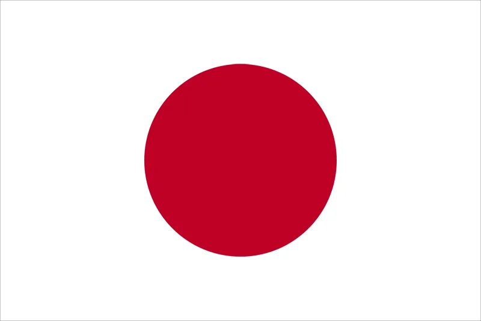
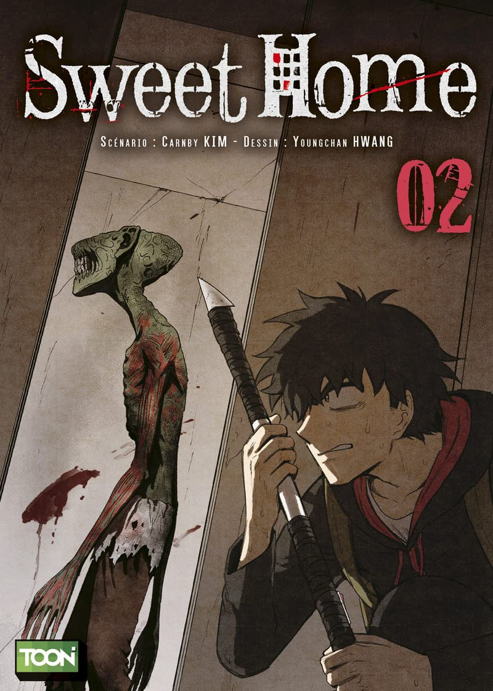
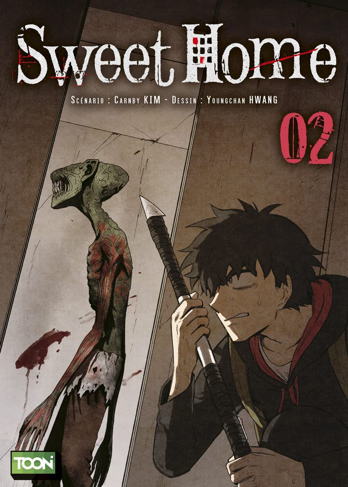
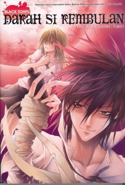
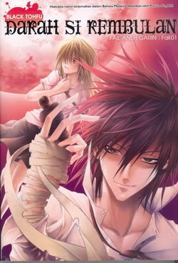

ASIA
CHINA
Known as Manhua, The oldest surviving examples of Chinese drawings are stone reliefs from the 11th century BC and pottery from 5000 to 3000 BC. Other examples include symbolic brush drawings from the Ming Dynasty, a satirical drawing titled "Peacocks" by the early Qing Dynasty artist Zhu Da, and a work called "Ghosts' Farce Pictures" from around 1771 by Luo Liang-feng. Chinese manhua was born in the late 19th and early 20th centuries, roughly during the years 1867 to 1927. Wuxia (historical arts based martial arts stories) and Xianxia (demons and angels) are often huge themes in there comics.
Despite China being a major consumer of comics for decades, the medium has never been taken as "serious works of art". R. Martin of The Comics Journal describes the Chinese outlook on comics as "pulpy imitations of films". Furthermore, China strictly controls the publishing of comics, and as a result, cartoonists faced difficulty reaching a large audience. Many cartoonists in the late 2000s began self-publishing their work on social media instead of attempting to issue paper editions. Websites such as Douban (2005) and Sina Weibo (2009) are popular venues for web manhua and webcomics.
JAPAN
Known as Manga, Japanese comics is considered one of the big three of the global comics industry. The genres are usually separated by gender and age range such as shonen and shojo for young boys and girls and seinen and josei for older men and women. Manga stories are typically printed in black-and-white—due to time constraints, artistic reasons (as coloring could lessen the impact of the artwork). Collected chapters are usually republished in tankobon volumes.
Manga originated from emakimono (scrolls), Choju-jinbutsu-giga, dating back to the 12th century. During the Edo period (1603–1867), a book of drawings titled Toba Ehon further developed what would later be called manga. The word itself first came into common usage in 1798,with the publication of works such as Santo Kyoden's picturebook Shiji no yukikai (1798). Regardless of its source, an explosion of artistic creativity occurred in the post-war period, involving manga artists such as Osamu Tezuka (Astro Boy) and Machiko Hasegawa (Sazae-san).
By 1995, the manga market in Japan was valued at ¥586.4 billion ($6–7 billion), with annual sales of 1.9 billion manga books and manga magazines in Japan. In 2022 Japan's manga market hit a record value of ¥675.9 billion. Manga have also gained a significant worldwide readership. Beginning with the late 2010s manga started massively outselling Western comics.


SOUTH KOREA
Known as Manhwa, South Korean comics are heavily influenced by Japanese manga. Manhwa art differs from manga and manhua as well with its distinct features. The bodies of characters are often realistically proportioned, while the faces remain unrealistic.
Korea was part Japanese Empire from 1910 to 1945 and during this time elements of Japanese language and culture were incorporated into Korean society. The term manhwa came into popular use in Korea during the 1920s, when it was applied to cartoons. By the mid 1920s, most newspapers were shut down, and political and social cartoons were abandoned, replaced by humorous illustrations and cartoons geared towards children. During the Korean war, Manhwa was used with the aim of boosting the morale of the public. The popularity of comics rose during the 1950s and 1960s.
In response to the increasing publication of comics, as well as social and political changes within South Korea, the government began to enforce censorship laws and, by the mid-1960s, created a comics distribution monopoly that further censored manhwa.hen in the early 2000s, the majority of Manhwa was transferred to online sources due to economic collapse that South Korea had experienced at the end of the millennium. because of its transfer to online sources, its popularity overseas has risen. This led to the South Korean search portal to launch LINE Webtoon, a platform for distributing online Manhwa.


 

THAILAND
The first recognized cartoon in Thailand was made during the reign of King Rama V, which appeared in the magazine Samran Wittaya ('Enjoyable Knowledge') in January 1907. The cartoon depicted a Chinese pork seller, a dog, a chair, and a pork leg, and included a riddle in the form of a poem. Cartooning in Thailand gained momentum during the reign of King Rama VI, who was not only interested in drawing but also exposed to British political cartoons during his education at Oxford University. In 1917, he coined the Thai word "Paap Lor" as a term for "cartoon", which helped to establish the medium in Thailand.
After World War II, Thai cartooning resumed and the period from 1953 to 1962 was called "the golden age of Thai cartoons". Among the famous and influential cartoonists of this era were Adirek Ariyamontri, Mongkol Wongudom, Weerakul Thongnoi, Pimon Kalasee, and Sa-Ngob Jampat. Prayoon Chanyawongs was perhaps the most celebrated cartoonist of this early period and became known as the "King of Thai Cartoon." He was the first Asian to win the International Cartoon for Peace Competition in New York in 1960 for his cartoon "The Last Nuclear Test".
Thailand's comic industry has seen remarkable growth in recent years, with the emergence of talented artists and the advent of digital platforms making it easier for readers to access their works.
 

VIETNAM
Known as Truyen Tranh, Manhoa, as well as other longer names, Vietnam comics were influenced by China and sometimes India. They illustrated philosophy or stories and were printed using woodcuts. There were some drawings called "moral books" for the education of women. In the 1930s during the Westernization movement, Viet comics became an independent art with numerous artists and readers.
After World War II, there were propaganda comics against the occupying French forces. In Hanoi and Saigon there were comics what based on romance novels or knightly tales. Some comics were on the topic of Vietnamese history and mythology.
The most famous artist was Nguyen Hung Lan, whose popular comics included Hero Hesman, Vietnamese supermen, Ty Quay, and Vietnamese fairytales. Many artists borrowed topics and characters from international comics and animated films for imitating. Examples include Well, Just You Wait!, Superman, Jurassic Park and Tom and Jerry.
Many modern day comics are funded by crowd funding.